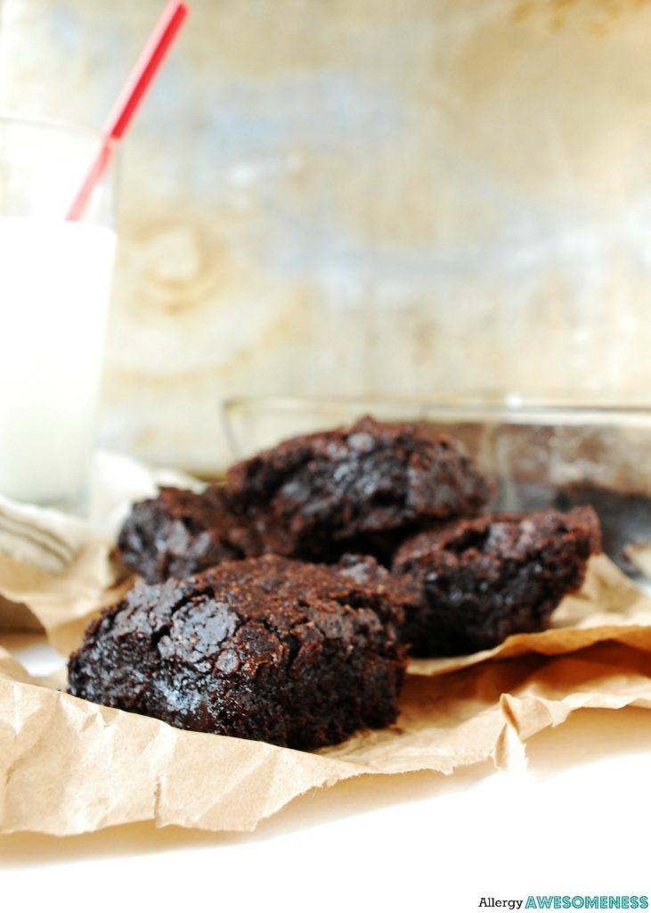

These Allergy Free Brownies are a game changer. The flax used in this recipe helps with the right consistency. They are perfect for someone who has food allergies to enjoy some normalcy with Brwonies. They are perfect witha glass of milk.
Ingredients
- 1 1/2 cups gluten free flour
- 1 1/2 cups sugar
- 1 cup cocoa powder
- 1 1/2 tsp baking powder
- 1 tsp xantahn gum (omit if it is already in your flour)
- 1/2 tsp salt
- 2/3 cup coconut oil
- 4 flax eggs(4 tablespoons of groubnd flax with 10 tablespoons of warm water
- 2 tsp vanilla extract
Instructions
- Grease a square 8X8 pan. Preheat your oven 350℉.
- In a small bowl, combine flaz eggs and warm water. Allow this to sit for a few mintues.
- In a large mixing bowl, combine all the dry ingredients: flour, sugar, cocoa, baking powder, xanthan, and salt. Whisk until the cocoa is broken up and incoporated completely.
- Pour in the wet ingredients: melted coconut oil, flax egg mixture and vanilla extract.
- Stir unti everything is mixed well. The dough will be thick and doughy. Use greased, or wet hands, to press into the greased pan.
- Bake 25-30 mintues, until the edges and tiop are crisp. (Cook until it reaches your desired level of being done.
- Cool and cut into squares. Keep at room temperature.
Brownies- Allergy Free